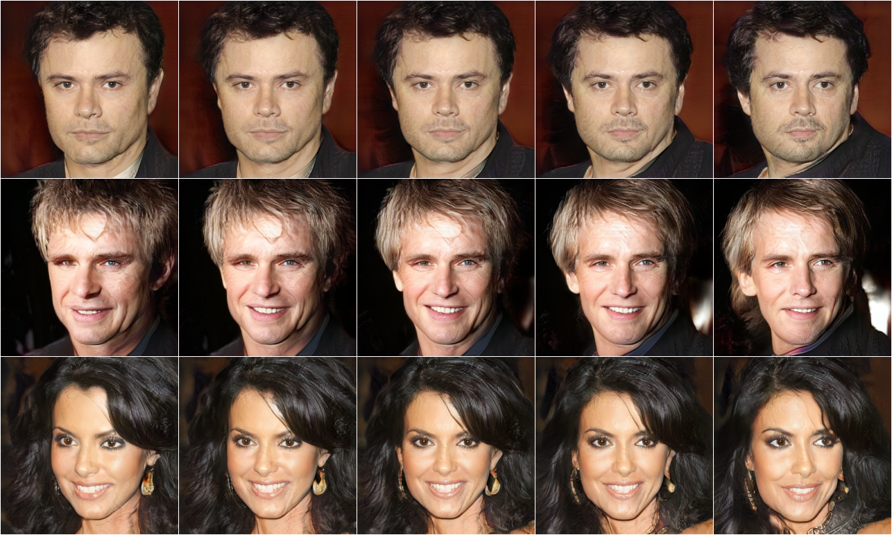

|
Yanbo Xu*, Yueqin Yin*, Liming Jiang, Qianyi Wu, Chengyao Zheng, Chen Change Loy, Bo Dai, Wayne Wu.
TransEditor: Transformer-Based Dual-Space GAN for Highly Controllable Facial Editing .
In CVPR, 2022. (Paper)
|
Method
Two latent spaces Z and P are used for generation. We correlate them via a cross-attention-based interaction module to facilitate editing.
Interpolation of two latent spaces. They are disentangled with different semantic meanings.
Interpolating Z space
 |
Interpolating P space
 |
Editing Results
Smile editing on Z space
|
Gender editing on Z and P space
|
Head pose editing on P space
|
Age editing on Z and P space
 |
Comparison
Our method shows better editing ability compared with other SOTA methods.
Gender Editing Comparison
|
Pose Editing Comparison
|
Acknowledgements
This study is partly supported under the RIE2020 Industry Alignment Fund Industry Collaboration Projects (IAF-ICP) Funding Initiative, as well as cash and in-kind contribution from the industry partner(s).
|